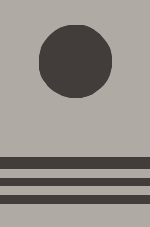
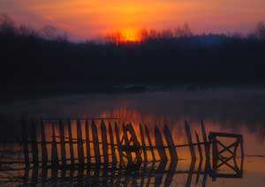
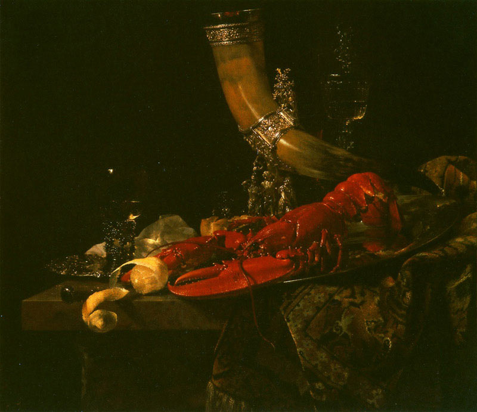
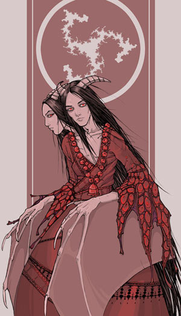

Проверь себя. Основы композиции
|
|
Задание 2. Этот чистый лист не несет никакой информации, плоскость изображения воспринимается нами как бессодержательная, пустая, не организованная.
Задание 3. Вы замечаете, что плоскость листа начинает оживать. Это значит, что наши изобразительные элементы вступают с ней в пространственную связь, образуя смысловую завязку. Проще сказать, плоскость и любой элемент на ней начинают взаимодействовать, вести диалог между собой, и начинают нам о чем-то "рассказывать". Так мы получаем самую примитивную композицию, которую даже трудно таковой назвать, но это уже она.
Задание 4. Пространственная связь между плоскостью и предметом
В одних случаях круг будет занимать более устойчивое положение, в других - неустойчивое. Для гармоничности восприятия круг нужно немного сместить вверх. Чувствуется устойчивое положение круга? Он занимает в квадрате точно свое место. Таким образом, наша простейшая композиция будет являться более гармоничной, а значит, более правильной.
Задание 6. Геометрический центр композиции
 |
1) Вы ощущаете, что эта композиция не гармонична, потому как отдельные части ее не уравновешены. Предметы сильно смещены влево, оставляя пустое, незадействованное в композиции пространство справа. А глаз стремится всегда все уравновешивать и добиваться гармонии. |
|
2) Нужно переместить элементы композиции, как на рисунке ниже. Так лучше? Участвующие в композиции элементы взаимодействуют с условными диагональными, вертикальными и горизонтальными осями плоскости. Мы добились устойчивого зрительного равновесия всех компонентов композиции относительно геометрического центра. Даже если ни одна фигура здесь не находится посередине, они уравновешивают друг друга, образуя вместе центр там, где зрение этого ожидает, поэтому и смотреть на этот рисунок более комфортно, чем на предыдущий. |
А если добавить еще несколько элементов, то в таком случае они должны быть несколько слабее по размеру или тону (или цвету) и в определенном месте, чтобы визуально не сбивать геометрический центр композиции, иначе снова придется менять расположение элементов для гармоничного восприятия.
Задание 7. Cтатичное и динамичное равновесие
Это способы уравновесить композицию, способы создать гармоничность.
|  |
 |
|
|
Композиция с кругом и полосками. Здесь показано статичное равновесие круга и полос. Как оно достигается? - Анализ скрытой структуры листа композиции показывает, что она строится в первую очередь по горизонтальным и вертикальным осям. Более чем статично. - Использованы статичные элементы: круг и полосы; круг уравновешен полосами и не вылетает из плоскости. - Условный геометрический зрительный центр располагается на пересечении диагоналей. - Композиция может рассматриваться со всех сторон, не давая повода выявлению дисгармонии. |
Композиция с несколькими полукругами и выделенной цветом доминанты. Как достигается динамичное равновесие? Если смотреть на скрытую структуру листа, то кроме горизонтальных и вертикальных осей построения композиции, можно четко видеть использование диагональной оси. Ее присутствие выдает красный круг, который в этой композиции является доминантным пятном - участком, на который глаз обращает внимание в первую очередь. |
Задание 8. Композиционный центр. Доминанта
 |
2) Рисунок подчиняется строгому правилу - в нем присутствует смысловой элемент, который замечается зрителем в первую очередь. Птица, сидящая на кресле, содержит большее количество деталей, контрастных элементов. Она самая большая по массе и находится на фоне, который достаточно пуст, чтобы не мешать зрителю воспринимать ее, как главную доминантную деталь на рисунке. Остальные фрагменты или намного мельче ее, или недостаточно контрастны и по отношению к собственным деталям и к элементам фона. Остальные составляющие рисунка следует рассматривать в том же порядке. От главных, к второстепенным. Постепенно уменьшая их отношения друг к другу. |
|  |
3) Уравновешенность данного кадра характеризуется отсутствием доминант на снимке и следованием правилу «золотого сечения». Так снимок зрительно состоит из 3-х частей: забор с отражением, вода с отражением леса, лес и небо. Забор, являясь главной составляющей данного изображения, тем не менее, нисколько не нарушает идиллии, общей атмосферы умиротворенности данного места фотосъемки. Отсутствие диагоналей в снимке лишает его всякой динамики. |
|  | 4) Голландские натюрморты всегда отличались большим количеством изображенных предметов, выписанных с фотографической тщательностью. И, тем не менее, художники умело объединяли работу цветом и тоном в одно целое. Доминанта - краб. |
Задание 9. Композиционный и геометрический центры композиции
 3) Закон цельности и неделимости
означает, что
рисунок должен восприниматься цельно, независимо от количества
изображенных на нем объектов. Если объекты на рисунке не
упорядочены, то рисунок вызывает чувство
хаотичности, вносит дискомфорт и даже раздражает зрителя. Все элементы должны быть связаны по смысловому и пространственному
расположению, композиции следует быть разнообразной, но не
пестрой.
3) Закон цельности и неделимости
означает, что
рисунок должен восприниматься цельно, независимо от количества
изображенных на нем объектов. Если объекты на рисунке не
упорядочены, то рисунок вызывает чувство
хаотичности, вносит дискомфорт и даже раздражает зрителя. Все элементы должны быть связаны по смысловому и пространственному
расположению, композиции следует быть разнообразной, но не
пестрой.
В данном изображении этот закон не соблюдается. Вроде глаз должен смотреть на персонажа, но слишком яркое белое пятно света, узор в левом нижнем углу и хаотично разбросанные по фону перышки отвлекают и не дают сосредоточиться на главном.
Задание 10. Статичная композиция и динамичная композиция
|  |
 |
|
|
3) Статичная композиция. В ней нет ярко выраженного движения. |
4) В композиции четкая динамика, сильное движение. Тем не менее все уравновешено, движению есть. |
 |
 |
Задание 11. Эти две схемы показывают неправильный подход к композиции. На первом рисунке отчетливо читается повтор в массах: размере, направлении, яркости и форме.
На втором, изображена типичная ошибка, когда композиция хаотична. В ней нельзя выделить общую идею (направление). Кроме того для зрителя не комфортны обрезанные краем листа формы. Считается, что обрезать элементы на рисунке можно лишь по вертикали. Лучшим решением было бы не допускать обрезки, как по вертикали, так и по горизонтали. Или жертвовать при обрезке незначительными элементами.
 |
Задание 12. Пример неправильной, неуравновешенной композиции. Темная, тяжелая нижняя часть кадра превалирует над легким, светлым небом. Снимок выглядит тяжелым, и как будто его что-то тянет вниз и вправо. Усугубляется это не выровненной линией горизонта, заваленного вправо. |